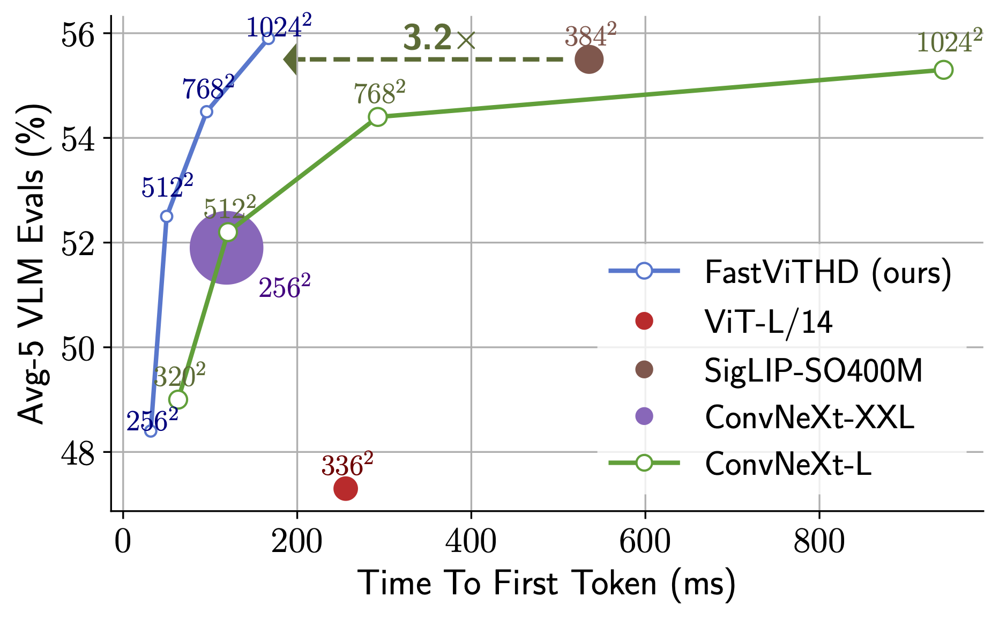

FastVLM: Efficient Vision Encoding for Vision Language Models
FastVLM was introduced in FastVLM: Efficient Vision Encoding for Vision Language Models. (CVPR 2025)

Highlights
- We introduce FastViTHD, a novel hybrid vision encoder designed to output fewer tokens and significantly reduce encoding time for high-resolution images.
- Our smallest variant outperforms LLaVA-OneVision-0.5B with 85x faster Time-to-First-Token (TTFT) and 3.4x smaller vision encoder.
- Our larger variants using Qwen2-7B LLM outperform recent works like Cambrian-1-8B while using a single image encoder with a 7.9x faster TTFT.
Evaluations
| Benchmark | FastVLM-0.5B | FastVLM-1.5B | FastVLM-7B |
|---|---|---|---|
| Ai2D | 68.0 | 77.4 | 83.6 |
| ScienceQA | 85.2 | 94.4 | 96.7 |
| MMMU | 33.9 | 37.8 | 45.4 |
| VQAv2 | 76.3 | 79.1 | 80.8 |
| ChartQA | 76.0 | 80.1 | 85.0 |
| TextVQA | 64.5 | 70.4 | 74.9 |
| InfoVQA | 46.4 | 59.7 | 75.8 |
| DocVQA | 82.5 | 88.3 | 93.2 |
| OCRBench | 63.9 | 70.2 | 73.1 |
| RealWorldQA | 56.1 | 61.2 | 67.2 |
| SeedBench-Img | 71.0 | 74.2 | 75.4 |
Usage Example
To run inference of PyTorch checkpoint, follow the instruction in the official repo:
Download the model
huggingface-cli download apple/FastVLM-7B
Run inference using predict.py from the official repo.
python predict.py --model-path /path/to/checkpoint-dir \
--image-file /path/to/image.png \
--prompt "Describe the image."
Run inference with Transformers (Remote Code)
To run inference with transformers we can leverage trust_remote_code along with the following snippet:
import torch
from PIL import Image
from transformers import AutoTokenizer, AutoModelForCausalLM
MID = "apple/FastVLM-7B"
IMAGE_TOKEN_INDEX = -200
tok = AutoTokenizer.from_pretrained(MID, trust_remote_code=True)
model = AutoModelForCausalLM.from_pretrained(
MID,
torch_dtype=torch.float16 if torch.cuda.is_available() else torch.float32,
device_map="auto",
trust_remote_code=True,
)
messages = [
{"role": "user", "content": "<image>\nDescribe this image in detail."}
]
rendered = tok.apply_chat_template(
messages, add_generation_prompt=True, tokenize=False
)
pre, post = rendered.split("<image>", 1)
pre_ids = tok(pre, return_tensors="pt", add_special_tokens=False).input_ids
post_ids = tok(post, return_tensors="pt", add_special_tokens=False).input_ids
img_tok = torch.tensor([[IMAGE_TOKEN_INDEX]], dtype=pre_ids.dtype)
input_ids = torch.cat([pre_ids, img_tok, post_ids], dim=1).to(model.device)
attention_mask = torch.ones_like(input_ids, device=model.device)
img = Image.open("test-2.jpg").convert("RGB")
px = model.get_vision_tower().image_processor(images=img, return_tensors="pt")["pixel_values"]
px = px.to(model.device, dtype=model.dtype)
with torch.no_grad():
out = model.generate(
inputs=input_ids,
attention_mask=attention_mask,
images=px,
max_new_tokens=128,
)
print(tok.decode(out[0], skip_special_tokens=True))
Citation
If you found this model useful, please cite the following paper:
@InProceedings{fastvlm2025,
author = {Pavan Kumar Anasosalu Vasu, Fartash Faghri, Chun-Liang Li, Cem Koc, Nate True, Albert Antony, Gokul Santhanam, James Gabriel, Peter Grasch, Oncel Tuzel, Hadi Pouransari},
title = {FastVLM: Efficient Vision Encoding for Vision Language Models},
booktitle = {Proceedings of the IEEE/CVF Conference on Computer Vision and Pattern Recognition (CVPR)},
month = {June},
year = {2025},
}